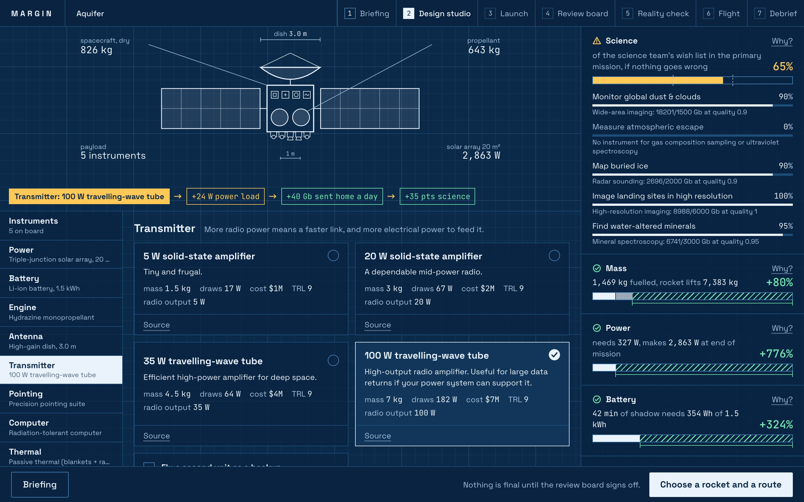
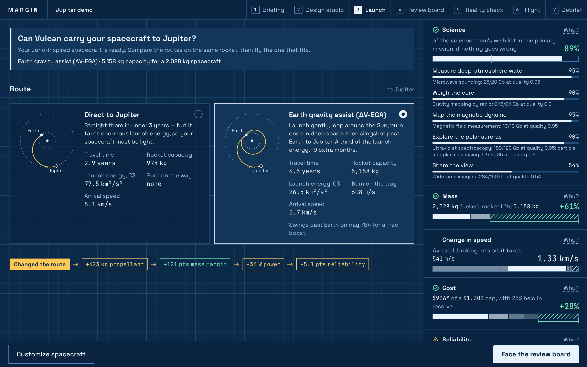
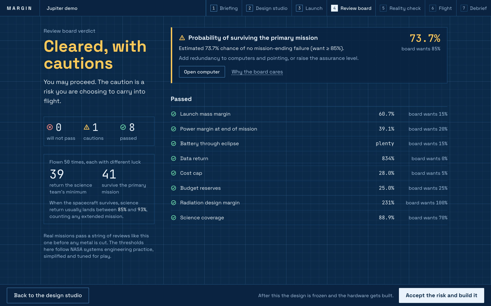
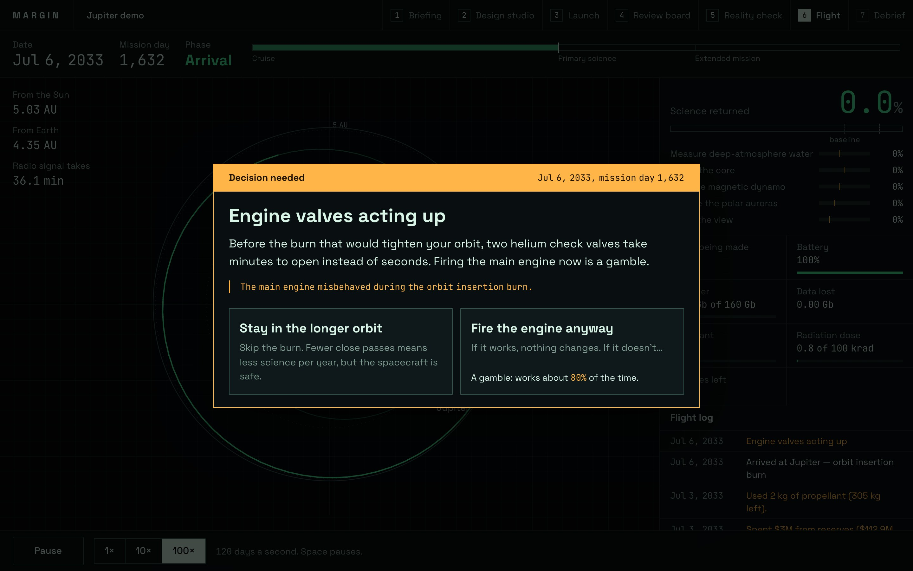
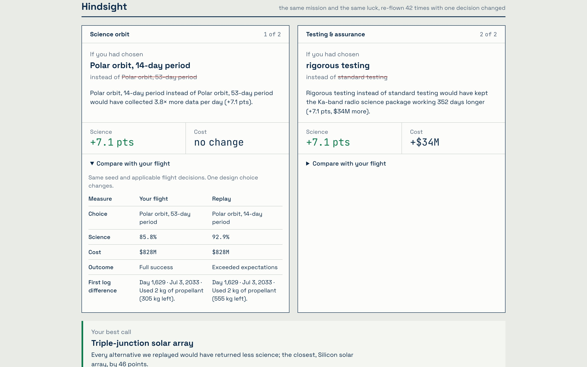
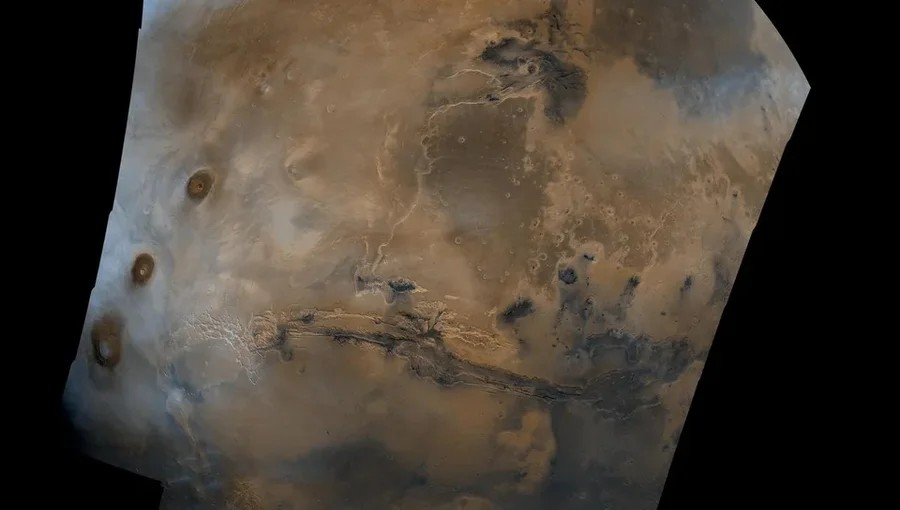
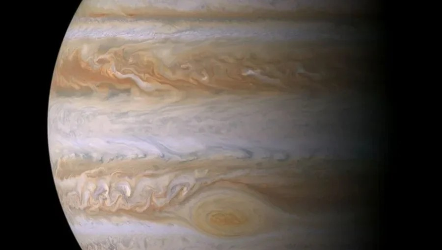
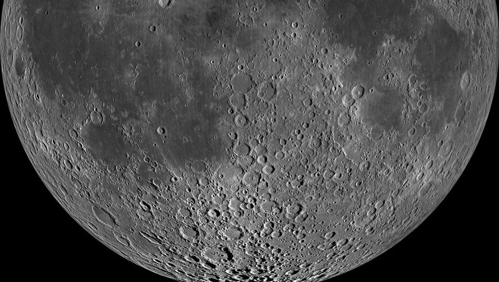

AI-assisted slide · NASA photos are real, not AI-generated
NASA SPACE APPS CHALLENGE 2026
MARGIN
Can you reach Jupiter and bring the science home?
A browser game about designing and flying robotic missions.
TEAM TORPID
SI-assisted code, writing & layout · images are NASA photos or game screenshots
AI-assisted slide · NASA photos are real, not AI-generated
The science gives you a reason to choose every kilogram and watt.

AI-assisted · game interface built with AI toolsThe Design Studio. Swapping in the 100 W radio ripples through power, data sent home and science.
Measure Jupiter’s deep water, gravity field and magnetosphere.
Choose instruments, power, radio, shielding, rocket and route.
Respond to surprises. Replay the mission with one decision changed.
A more powerful radio returns more data, but it changes the power budget.
AI-assisted slide · NASA photos are real, not AI-generated
Both flight paths come from archived NASA Ames trajectory searches.

AI-assisted · game interface built with AI toolsThe Launch screen in the guided Jupiter flight: same rocket, two routes.
| Route | C3 | Cruise | Vulcan lifts | Margin |
|---|---|---|---|---|
| Direct | 77.5 | 1,056 d | 978 kg | −60% |
| Earth assist | 26.5 | 1,632 d | 5,158 kg | +61% |
The assist adds 576 days of cruise and makes room for a much heavier spacecraft.
NASA Ames Trajectory Browser ·
NASA Launch Services Program
Vulcan figures interpolated · MARGIN reference harness
AI-assisted slide · NASA photos are real, not AI-generated
The same assisted Jupiter design, flown with and without the modeled titanium vault.
With titanium vault
Without titanium vault
In the game, carrying 150 kg of shielding can be worth the added launch mass.
Share of flights returning the science team’s minimum · 50 simulated flights per design · reference seed 2026

AI-assisted · game interface built with AI toolsThe Review Board flies the design 50 times before you commit: 39 of 50 with the vault.
AI-assisted slide · NASA photos are real, not AI-generated
Juno’s main-engine valves changed the mission plan after arrival. In MARGIN the call is yours.

AI-assisted · game interface built with AI toolsA decision card on arrival at Jupiter. Each card ends with what really happened and a NASA source.
53 days
Juno stayed in its wider orbit after the team canceled a planned burn to shorten it to 14 days.
Fourteen cards like this one come from real mission histories, and the solar storms replay NASA’s DONKI record.
AI-assisted slide · NASA photos are real, not AI-generated
Hindsight re-flies your mission with the same luck and exactly one choice changed.

AI-assisted · game interface built with AI toolsThe debrief of the guided flight. Every replay can be opened and compared line by line.
+7.1 pts
What choosing the 14-day science orbit over the 53-day one would have added to this flight.
The engine is deterministic, so the replay differs from your flight only by the decision under test.
You leave knowing why the mission went the way it did.
AI-assisted slide · NASA photos are real, not AI-generated
The catalog marks NASA values, engineering estimates and gameplay assumptions.
The datasets ship with the game, so it makes no runtime data requests.
Open “Source” or “Why?” on any number in the game to see its label, formula and reference.
egli3.github.io/NASA-Space-Apps-Hackathon

Red Planet DetectiveNASA/JPL/USGS
Giant’s HeartNASA/JPL/Space Science Institute
Lunar Ice ProspectorNASA/GSFC/Arizona State UniversityTeam Torpid · AI (SI) tools assisted the code, writing, layout and game interface · screenshots are the running game · no AI-generated images: all photos are NASA originals